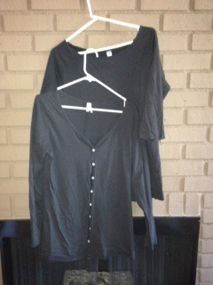

Green Khaki Cargo Pockets |
Chocolate Brown Leather Jacket Newport News Size L |
White Cargo Pockets Size 10 VS London Jean |
Lavender and White Size L VS |
Black with Silver Stripes, and Silver for Drawstrings Size XL Plush & Lush VS |
|  | ||||
| 2 Green XL VS Moda T's. One is Camouflage, One is Olive Green |
2 XL VS Moda Scrunched T's with Texture. Black and Tan. Stretchy |
2 XL Old Navy V-Neck T's Black | 2 VS Moda Black XL T's. One in Back is Scoopneck w/3/4 sleeves |
Fushia Satin Oversized Size M Newport News 3/4 Cuffed Sleeves |
| Old Navy Lovely XL Green Lace V-Neck T |
2 Long L Size Split Hem T's White | VS Moda Open Wrap Size L T |
Gray and Silver VS Lush & Plush L Open Wrap Sweatshirt Velour |
Size XL Lightweight Ivory Gathered U-Neck 3/4 Sleeve T |
| 2 White VS Moda Stretchy XL Tops Back one is Scoop Neck, Smooth |
3 XL Caren Sport V-Neck T's. Black, Red, Oatmeal Heather |
Best Tunic Sweaters VS Moda Heather Red Cowl, Lt. Blue Zip Hood |
VS Moda Light Cover Up White Pockets, Drawstring, Buttons, 3/4 Sl. |
M Size Oversized Pink VS Moda Warm Classic Sweatshirt |
| XL Lace & Ruffles Empire V-Neck Puffed Sleeve Blouse Cute |
2 White Old Navy Fitted XL Thermal Hoodies Lightweight |
6 VS Lush & Plush Velour Flare Sweatpants Stretchy M Oversized |
Example of Fucshia Plush & Lush Come in Black, Gray, Tan, Blue, Robins Egg |
Example of oversized Plush & Lush Gray XL, Tan L |
| Example of only VS Lush & Plush Velour Hoodie Size L Blue like Pants |
Light Khaki Neutral Cotton Drawstring Coat Warm Newport News Size Large |
Back View Shows Khaki Cotton Coat w/ Removeable Dry Clean Hood |
Boxy White VS Moda Size L Crochet Neck Sweater. Thick. |
3 VS Yoga Tunics in Navy, Hot Pink, (Both in L) Orange (in XL and L) |
| 2 Pairs of London Jeans VS, One Size 10, One Size 12. |
White VS London Jean Cargo Pockets Size 10 zip leg. |
Tan, Beige London Jean Flare VS Size 12 |
||